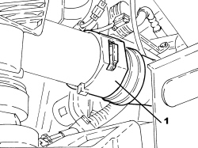
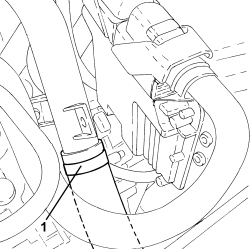
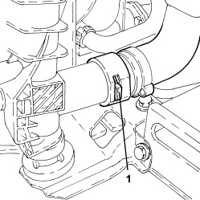
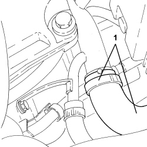
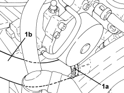
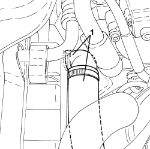

1088D14 UPPER RADIATOR COOLANT INLET HOSE - R.R.
- Path
- Procedures > 10 ENGINE > 1088 ENGINE COOLING > 1088D COOLANT PIPES AND HOSES > 1088D14 UPPER RADIATOR COOLANT INLET HOSE - R.R.
- Kind
- repair procedure (removal / refitting; the operation number is the code)
- Applies to
- all engines; all production periods
- Interactive page
- https://sloeber94.github.io/elrnDB-aBrrSpdr/en/#/946002013
Applies to: engines: 2.2 JTS; all production periods
 Removing
Removing
 Refitting
RefittingOp. 0010T20 ENGINE COOLANT - CHANGE
1. Disconnect the rapid connector for the radiator coolant outlet hose.

Applies to: engines: 2.2 JTS; all production periods
1. Lower the vehicle, loosen the band and disconnect the hose from the rigid pipe.

Applies to: engines: 2.2 JTS; all production periods
Refitting
Removing- Connect the hose to the rigid coolant pipe and secure it using the band.
- Raise the vehicle and connect the rapid connector for the coolant hose to the lower radiator mounting.
Applies to: engines: 3.2 JTS; all production periods
Removing
RefittingOp. 0010T20 ENGINE COOLANT - CHANGE
1. Disconnect the rapid connector and then the radiator coolant inlet hose, radiator side.

Applies to: engines: 3.2 JTS; all production periods
1. Loosen the band and disconnect the radiator coolant inlet hose, three-way connector side and remove it.

Applies to: engines: 3.2 JTS; all production periods
- If necessary, loosen the band and remove the connector with the rapid connector.
Applies to: engines: 3.2 JTS; all production periods
Refitting
Removing- Place the connector with the rapid connector in position and secure the band.
- Place the radiator coolant inlet hose in position, three-way connector side and fasten the band.
- Connect the radiator coolant inlet hose, radiator side and the rapid connector.
Applies to: engines: 2.4 JTD 20v; all production periods
Removing
Refitting- Position the vehicle on a lift.
Op. 1048A41 HOSE FROM FLOW METER TO TURBOCHARGER - R.R.
Op. 7055B54 UNDER ENGINE PROTECTION/GUARD - R.R.
- Undo the radiator coolant drain plug.
1. Loosen the band (1a) and disconnect the radiator upper coolant inlet hose (1b), thermostat side.

Applies to: engines: 2.4 JTD 20v; all production periods
1. Disconnect the rapid connector and disconnect the radiator upper coolant inlet hose, radiator side, and remove.

Applies to: engines: 2.4 JTD 20v; all production periods
Refitting
Removing- Place the radiator upper coolant inlet hose in position and connect it to the radiator with the faston fitting.
- Connect the radiator upper coolant inlet hose, thermostat side, and tighten the band.
- Tighten the coolant drain plug to the radiator.
Op. 1048A41 HOSE FROM FLOW METER TO TURBOCHARGER - R.R.
Op. 0010T20 ENGINE COOLANT - CHANGE
Op. 7055B54 UNDER ENGINE PROTECTION/GUARD - R.R.
- Remove the vehicle from the lift.
Topics linked from this page (4)
- 0010T20 ENGINE COOLANT - CHANGE
- 1048A41 HOSE FROM FLOW METER TO TURBOCHARGER - R.R.
- 5530B10 BATTERY - R+R
- 7055B54 UNDER ENGINE PROTECTION/GUARD - R.R.